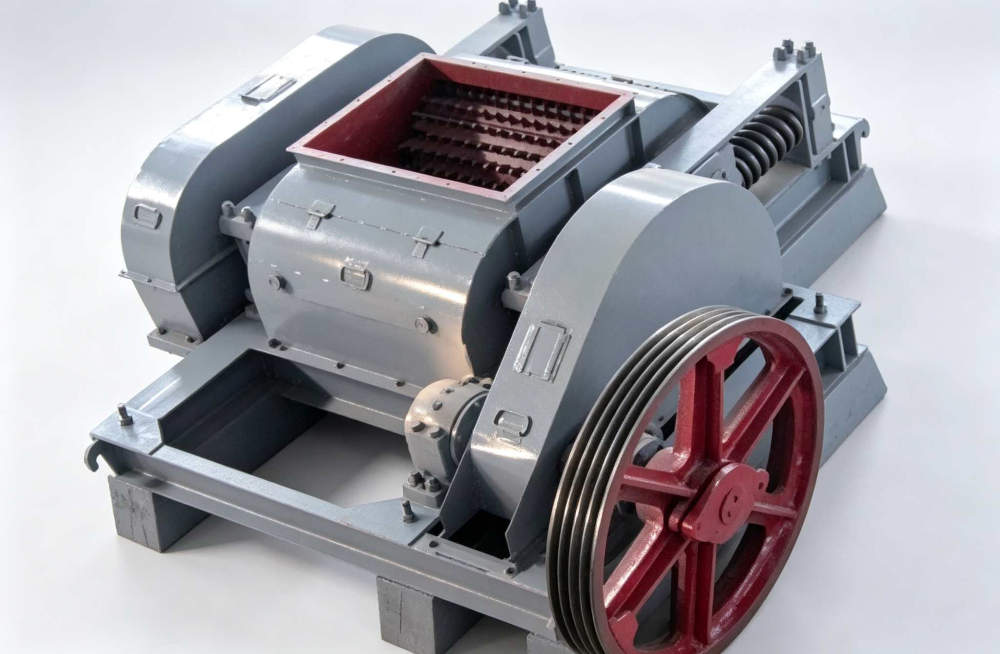

The Toothed Roll Crusher features wear-resistant crushing teeth embedded on the surface of two rollers, crushing large materials through splitting and compression. Suitable for coal, metallurgy, mining, chemical, building materials and other industries, especially for raw coal (with gangue) crushing in large coal mines or coal preparation plants. Feed size up to 200-1150mm, capacity 30-300 t/h.

The Toothed Roll Crusher (2PGC Series) is an important variant of the roll crusher, with high-wear-resistant crushing teeth embedded on the roller surface instead of smooth roller shells. The teeth are arranged in spiral or herringbone patterns, crushing large soft to medium-hard materials (coal, shale, limestone, clay, etc.) through 'splitting + compression'. Compared to smooth roll crushers, toothed rolls can increase the maximum feed size to 70-90% of the roller diameter (smooth: only 10-20%). The large-spec 2PGC1500×1200 can directly ingest 1000-1150mm raw coal lumps. The toothed roll crusher is the primary machine for primary crushing of raw coal (with gangue) in large open-pit coal mines and coal preparation plants, featuring large feed size, low over-crushing, low fines rate, while retaining the advantages of simple structure, reliable operation and low maintenance of roll crushers.
The crushing teeth on the roller surface penetrate and grip large material like 'grabbers' during rotation, forcibly pulling it between the two rollers. This feature allows toothed rolls to handle oversized material far exceeding the diameter limitation of smooth rolls — the concentrated stress at tooth tips easily penetrates medium-soft materials like coal and shale.
Material between the two rollers is simultaneously subjected to splitting force from the tooth tips (tearing along natural cracks) and compression force from the roller body. The spiral tooth arrangement also creates axial shear force, forming a three-dimensional stress state. Hard gangue is shattered under high tooth-tip pressure, while soft coal lumps are peeled by compression.
Crushed material passes through the tooth gaps and roller gap for discharge. Discharge size is controlled by both tooth spacing and roller gap. When encountering uncrushable hard objects (such as manganese steel cutting picks), the movable roller retreats through spring action. After the foreign object is discharged, it automatically resets. Large-spec models are equipped with hydraulic couplers for overload protection.
| Item | Toothed Roll Crusher (2PGC) | Smooth Roll Crusher (2PG) |
|---|---|---|
| Roller Surface | Embedded wear-resistant teeth (spiral/herringbone) | Smooth cylindrical surface (optional shallow grooves) |
| Crushing Principle | Splitting + compression combined | Pure compression + shear |
| Max Feed Size | Up to 70-90% of roller dia. (200-1150mm) | 10-20% of roller dia. (≤130mm) |
| Discharge Size | 15-200mm | 2-10mm |
| Capacity | 30-300 t/h | 2-120 t/h |
| Over-crushing Rate | Very low (splitting along cracks) | Low |
| Application | Raw coal/gangue coarse crushing, large pre-crushing | Medium-fine crushing, precision size control |
| Model | Roller Dia. (mm) | Roller Length (mm) | Max Feed (mm) | Discharge Size (mm) | Output (t/h) | Motor Power (kW) | Weight (kg) | Dimensions L×W×H (mm) |
|---|---|---|---|---|---|---|---|---|
| 2PGC600×500 | 600 | 500 | 200-450 | 15-100 | 30-60 | 7.5×2 | 3800 | 2450×1800×950 |
| 2PGC600×800 | 600 | 800 | 300-600 | 20-120 | 60-100 | 11×2 | 7200 | 2500×1900×1350 |
| 2PGC800×1000 | 800 | 1000 | 500-800 | 30-150 | 100-160 | 22×2 | 12600 | 2550×2050×1100 |
| 2PGC1000×1000 | 1000 | 1000 | 700-950 | 30-200 | 150-200 | 45×2 | 18800 | 2780×4100×1550 |
| 2PGC1200×1200 | 1200 | 1200 | 800-1050 | 30-200 | 180-250 | 55×2 | 29500 | 2780×3200×1980 |
| 2PGC1500×1200 | 1500 | 1200 | 1000-1150 | 30-200 | 200-300 | 75×2 | 38600 | 8010×4500×2050 |
※ Based on coal (Protodyakonov hardness f≤3). Output varies depending on material, feed size and other factors. Technical data subject to change without notice.
| Component | Function | Material / Features |
|---|---|---|
| Toothed Roller (Fixed + Movable) | Dozens of crushing teeth embedded on the roller surface in spiral or herringbone patterns. Fixed and movable rollers rotate towards each other. Tooth tips penetrate material for splitting crushing. The movable roller can slide along guide rails for overload protection. | ZG270-500 Cast Steel Roller Body + Wear-resistant Alloy Teeth |
| Crushing Tooth Head | Core working element of the toothed roll crusher, bearing direct impact and wear. Tooth shapes include conical, wedge and blade types, selected according to material characteristics. Individual teeth can be independently replaced without disassembling the entire roller. | High Cr Cast Iron KmTBCr26 / Carbide Hardfacing |
| Tooth Plate and Tooth Base | Tooth bases are welded or bolted to the roller surface. Crushing teeth are locked into the bases with bolts or wedges. Positioning slots between bases and roller ensure tooth arrangement precision. | ZG35CrMnSi Alloy Cast Steel |
| Spring/Hydraulic Overload Protection | Powerful spring sets or hydraulic accumulators behind the movable roller bearing base. When uncrushable material enters, the movable roller retreats to release load and automatically resets after discharge. Hydraulic type allows remote adjustment of overload pressure threshold. | 60Si2Mn Spring / Hydraulic Accumulator |
| Drive and Transmission | Two motors drive the two rollers respectively through hydraulic couplings. The hydraulic couplings provide soft start (reducing starting current impact) and overload slip protection. The two rollers can run at the same speed or with a 5-10% speed difference to enhance shearing effect. | Y Series Motor + Hydraulic Coupling |
| Frame and Dust Cover | Heavy-duty steel section welded frame withstands enormous crushing force. When toothed rollers crush coal and shale, large amounts of dust are generated. A dust-proof sealing cover is fitted on top, and access doors on the side panels facilitate tooth replacement. | Q345B / Q460C High Strength Steel |
Tooth tips can penetrate large material surfaces, with maximum feed size reaching 70-90% of roller diameter. The 2PGC1500×1200 can directly ingest 1.15m raw coal lumps without pre-screening or manual breaking, simplifying the mining-crushing process.
Splitting action occurs along natural material fractures without producing excessive crushing. The proportion of fines (-3mm) after raw coal crushing is significantly lower than with hammer crushers, bringing notable economic benefits to coal mines requiring lump coal products — lump coal sells at much higher prices than fines.
Each crushing tooth is independently installed on a tooth base. When worn, individual teeth can be replaced without removing the entire roller. Single tooth replacement takes about 10-15 minutes, significantly reducing downtime. Teeth can be flipped for reuse, extending service life.
The concentrated stress at tooth tips easily crushes hard gangue mixed in coal (sandstone, limestone nodules), while spring overload protection ensures safe unloading when encountering uncrushable objects (manganese steel cutting picks, shovel teeth, etc.). Especially suitable for crushing directly discharged from coal mining faces.
Splitting crushing has much higher energy utilization than hammer and impact crushing methods, with power consumption of only 0.3-0.6 kWh per ton of coal. Dual motor power is low (7.5-75kW×2), and with hydraulic coupling soft start, the impact on the mine power grid is minimal.
Low-speed rotation (tooth tip linear speed only 3-8 m/s, far below 30-50 m/s of hammer crushers) results in low operating noise (approx. 75-85 dB). Enclosed dust cover combined with spray dust suppression meets coal mine safety and environmental requirements.
Positioned at the exit of open-pit or underground coal mining faces, the toothed roll crusher directly crushes 500-1150mm large raw coal (with gangue) to 50-200mm, meeting the particle size requirements of belt conveyors and subsequent washing processes. Replaces traditional jaw crusher + manual breaking solutions.
Raw coal received by coal preparation plants often contains oversized lumps (>300mm) that must first be pre-crushed by a toothed roll crusher to 50-100mm before entering the washing system. Minimal over-crushing ensures lump coal yield, with significant benefits for high-value coals like coking coal and anthracite.
Shale and clay raw materials in the brick and ceramic industries have high moisture (15-25%), making hammer and impact crushers prone to clogging. The toothed roll crusher has large inter-tooth gaps and strong self-cleaning ability, enabling continuous processing of sticky and wet materials without blockage.
In cement and building materials industries, the toothed roll crusher can directly process 300-800mm limestone and gypsum blocks from quarries, replacing primary jaw crushers. Crushed 30-80mm material feeds into secondary crushing or directly into the mill, simplifying the crushing stages.
Need Toothed Roll Crusher? Contact us for coal crushing process solution and quote